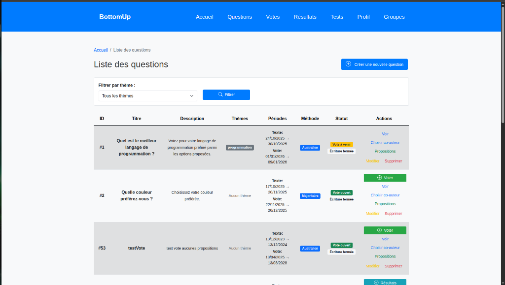
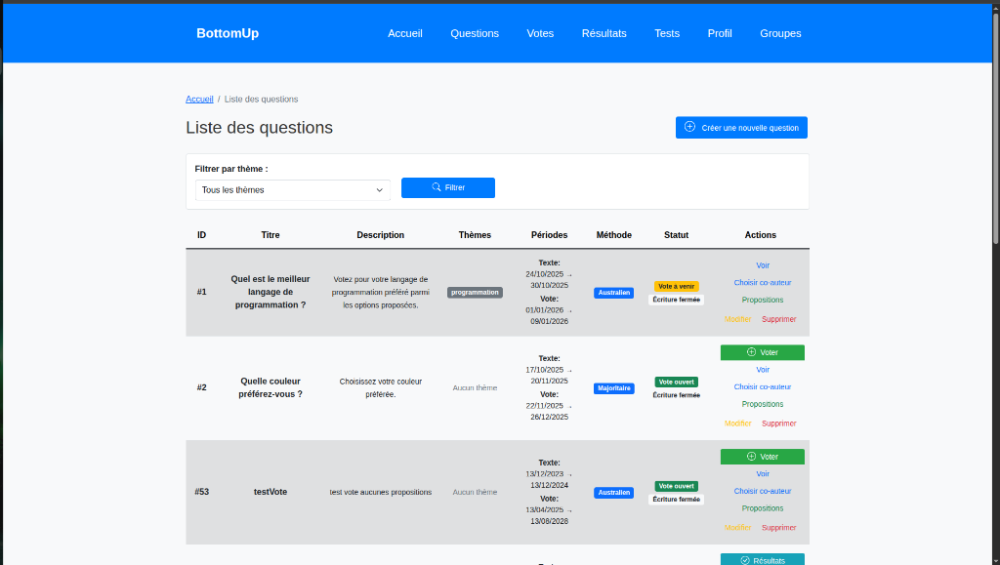

Contexte du Projet
Ce projet de Semestre 3 (SAE) consistait à développer une application web complète permettant l'interaction entre citoyens autour de questions diplomatiques. L'objectif était de créer un espace où les utilisateurs peuvent proposer des solutions et voter pour les meilleures idées.
- Nom du Projet : BottomUp
- Cadre : SAE Semestre 3
- Type : Application Web Fullstack
- Stack : HTML, CSS, PHP, SQL, JavaScript
- Architecture : MVC (Modèle-Vue-Contrôleur)
Fonctionnalités & Méthodes
L'application offre un système complet d'interaction :
- Authentification : Système de connexion et de déconnexion sécurisé (rôles admin/utilisateur).
- Débats : Création et gestion de questions thématiques (ex: programmation).
- Propositions : Soumission de propositions par les utilisateurs avec système de co-auteurs.
- Vote : Plusieurs méthodes de scrutin implémentées (Majoritaire, Scrutin Australien).
 

Compétences Travaillées
- Frontend : Interface réactive avec HTML/CSS et interactivité via JavaScript.
- Backend : Logique serveur en PHP (MVC).
- Base de Données : Modélisation complexe (Utilisateurs, Questions, Votes) et requêtes SQL optimisées.
- Sécurité : Gestion des sessions et protection contre les injections.
Contribution Personnelle
J'ai participé au développement du système de vote et à la gestion dynamique des propositions Php. J'ai également travaillé sur la structure de la base de données, sur les vues de résultats qui suivent les phases de vote, à l'ergonomie du site et aux systèmes de fusion des propositions